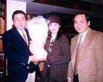

李敖秘密書房 劉雪華夫婦來訪  劉雪華(中)夫婦首度和李敖(左)碰面，話題精彩。 新婚未久的鄧育昆、劉雪華，日前相偕在「李敖秘密書房」首次公開露面，與李敖舊識、初入電視圈時一度想透過李敖引介的鄧育昆，捧著鮮花戲稱自己是帶著「朝聖」心情來會見「李總統」的。除了自己每天收看李敖的節目外，作為陪客，被李敖暱稱為「新娘子」的劉雪華，也在老公的影響下，如今變成李敖節目最忠實的觀眾。在整個錄影過程中，劉雪華或坐或站都攬著鄧育昆的臂膀，深情款款望著侃侃而談的鄧育昆，兩人夫唱婦隨，恩愛之情，溢於言表。 【2000/02/14/星報】
李敖秘密書房 劉雪華夫婦來訪
新婚未久的鄧育昆、劉雪華，日前相偕在「李敖秘密書房」首次公開露面，與李敖舊識、初入電視圈時一度想透過李敖引介的鄧育昆，捧著鮮花戲稱自己是帶著「朝聖」心情來會見「李總統」的。除了自己每天收看李敖的節目外，作為陪客，被李敖暱稱為「新娘子」的劉雪華，也在老公的影響下，如今變成李敖節目最忠實的觀眾。
在整個錄影過程中，劉雪華或坐或站都攬著鄧育昆的臂膀，深情款款望著侃侃而談的鄧育昆，兩人夫唱婦隨，恩愛之情，溢於言表。